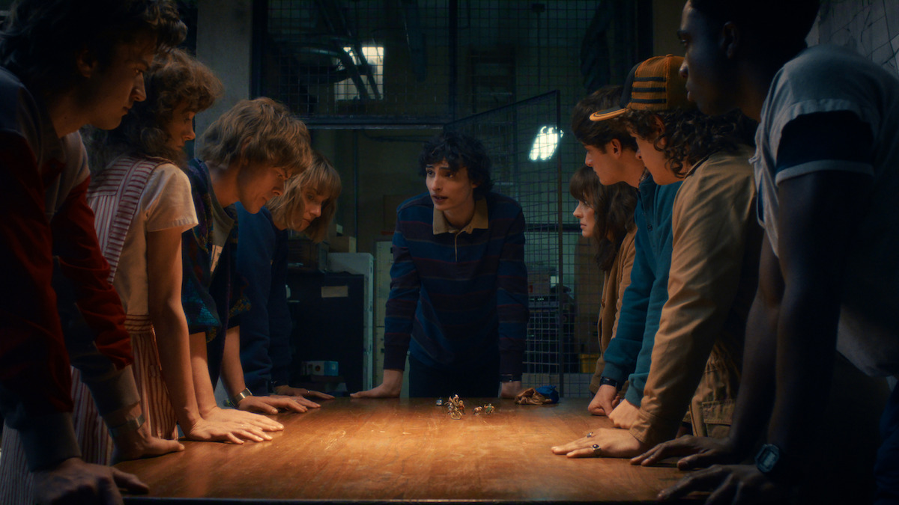
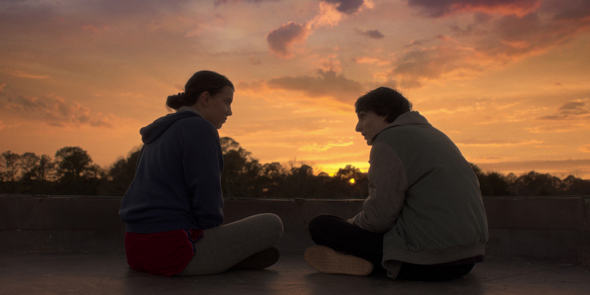
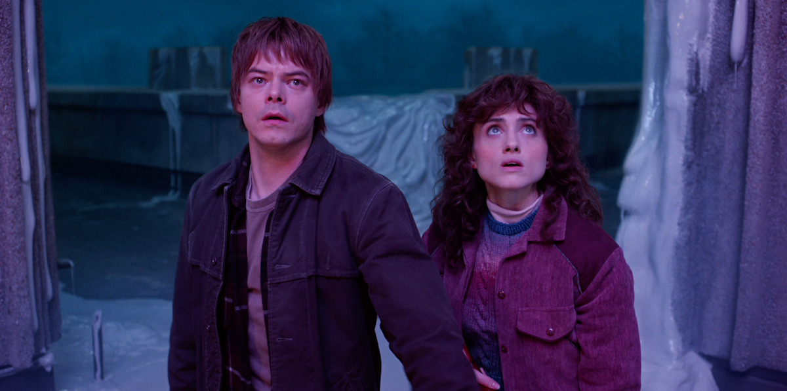
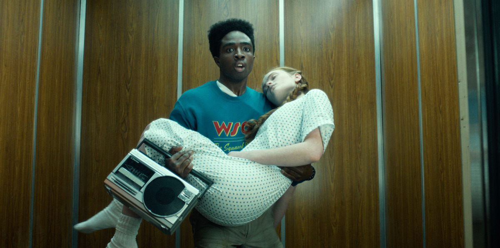
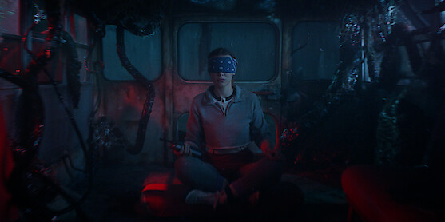
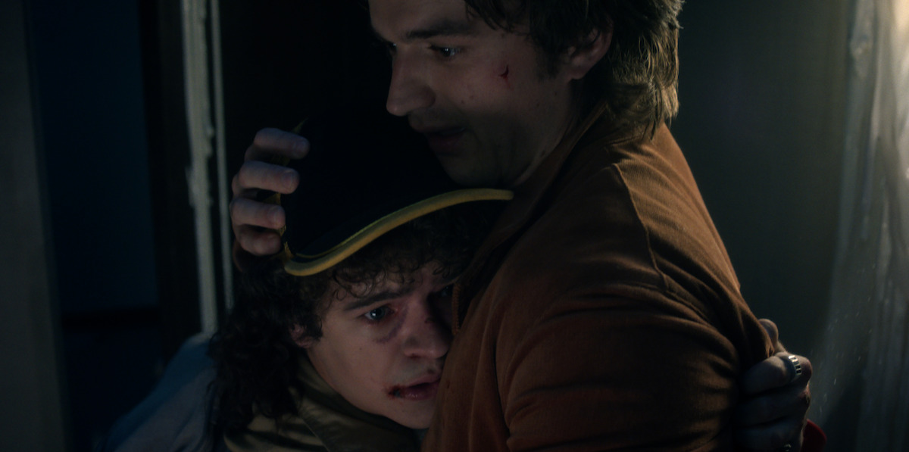

03 / EL ARCHIVO VISUAL
Hawkins, cuadro
por cuadro.
Seleccioná una imagen para verla en grande.






Imágenes promocionales: Netflix · Tudum.
03 / EL ARCHIVO VISUAL
Seleccioná una imagen para verla en grande.






Imágenes promocionales: Netflix · Tudum.